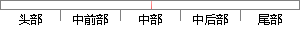

该模型以生存结局和生存时间为因变量，可同时分析众多因素对生存期的影响，能分析带有截尾生存时间的资料，且不要求估计资料的生存分布类型。
片段位置图

相似结果|
相似片段 1：英国统计学家D．R．Cox于1972年提出，模型以生存结局和生存时间为应变量，可同时分析众多因素对生存期的影响，分析带有截尾生存时间4的资料，且不要求估计资料的生存分布类型。基本COX模型表达式为办O
相似片段 2：资料分析稳健且有效的研究和应用。该模型是一种多因素的生存分析方法，可以分析带有截尾生存时间的资料，同时分析众多因素对生存期的影响，且不要求估计资料的生存函数的分布类型。由于上述优良性质，该模型自
相似片段 3： hazards regression model)。该模型是一种多因素的生存分析方法，适用范围广泛，可以分析带有截尾生存时间的资料，可同时分析众多因素对生存期的影响，且不要求估计资料的生存函数的分布类型，由于
相似片段 4：，可以分析带有截尾生存时间的资料，可同时分析众多因素对生存期的影响，且不要求估计资料的生存函数的分布类型，由于上述优良特质，该模型在医学随访资料的研究中得以广泛应用Mj。对于Cox模型的拟合优度评价
相似片段 5：(proportionalhazardsegressionmodel)，简称Cox模型。该模型是一种多因素的生存分析方法，可以分析带有截尾生存时间的资料，同时分析众多因素对生存期的影响，且不要求估计资料的生存函数的分布类型。由于上述优良性质
相似片段 6：，英国统计学家D．R．Cox于1972年提出的，简称Cox回归。这是一种多因素分析方法，特别适用于分析带有截尾生存时间的资料，同时分析众多因素对生存期的影响，且不要求估计资料的生存函数的分布类型。由于
相似片段 7：的资料，同时分析众多因素对生存期的影响，且不要求估计资料的生存函数的分布类型。由于上述优良性质，该模型自D．R．Cox于1972年提出以来，在医学随访研究中得到非常广泛的应用。据
相似片段 8：Log—rank检验以及Cox比例风险模型分析，P
相似片段 9：带有删失生存时间的资料，且不要求估计资料的生存分布类型11191。Kaplan—Meier法和Cox回归分析都是文献中常用的用于生存分析的统计方法。②以死亡率、住院率和不良事件发生率作为评价健康结局
相似片段 10：在f时刻的瞬时死亡率。7、Cox比例风险回归模型(Cox’sproportionalhaz rdsegression7m del)：简称Cox模型。该模型以生存结局和生存时间为应变量，可同时分析众多因素对生存期的影响。
|
※ 片段修改建议 ※
近似词参考：- 模型：模子
- 生存：保存 糊口生涯 生活 生计
- 结局：终局 了局
- 生存：保存 糊口生涯 生活 生计
- 时间：时候
- 分析：阐发 阐明 剖析
- 众多：浩繁 浩瀚
- 因素：身分
- 分析：阐发 阐明 剖析
- 生存：保存 糊口生涯 生活 生计
- 时间：时候
- 要求：请求
- 估计：估量 预计
- 生存：保存 糊口生涯 生活 生计
- 分布：散布 漫衍
- 类型：范例
系统自动生成语句：该模子以保存终局和保存时候为因变量，可同时阐发浩繁身分对保存期的影响，能阐发带有截尾保存时候的资料，且不请求估量资料的保存散布范例。
注：本片段修改建议为系统自动生成，仅供参考。